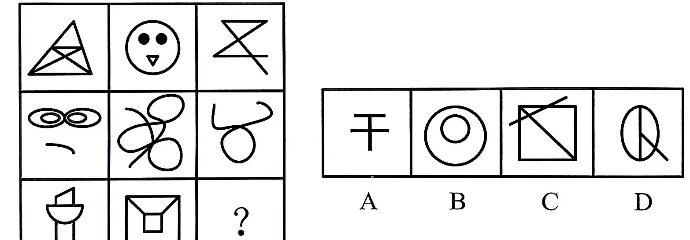
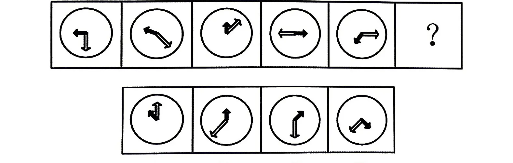
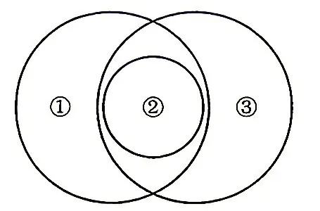

2026年9月16日出版的《求是》杂志发表习近平的重要文章《在加强基础研究座谈会上的讲话》。关于加强基础研究，下列说法正确的是（）。
①要优化基础研究系统布局，加快形成战略性、前瞻性、体系化布局
②要壮大基础研究人才队伍，基础研究归根结底靠高水平人才
③要加强对基础研究的支持保障，勇于破除思想障碍和制度藩篱，为基础研究提供长期稳定的投入保障和政策支持
④要拓展基础研究国际合作，主动融入全球创新网络，在开放合作中提升原始创新能力
A.1 项 B.2 项 C.3 项 D.4 项
答案点击查看答案与解析
下列关于平安中国建设，说法正确的有几项？（）
①要坚持系统思维，进一步树立发展是硬道理、安全也是硬道理的理念
②防范化解各类风险是平安中国建设的一项重要任务
③要完善公共安全体系，推动公共安全治理模式向事后治理转型
④总体国家安全观是建设更高水平平安中国的重要遵循，必须坚定不移贯彻
⑤要把经济安全摆在首位，坚定维护国家政权安全、制度安全、意识形态安全
A.2 项 B.3 项 C.4 项 D.5 项
答案点击查看答案与解析
列宁指出：世界不会满足人，人决心以自己的行动来改变世界。这说明（）。
A.意识具有调控人的行为和生理活动的作用 B.意识具有目的性和计划性 C.意识具有指导实践改造客观世界的作用 D.意识是客观世界的主观映象
答案点击查看答案与解析
制定实施中央八项规定，是我们党在新时代的徙木立信之举，领导干部的作风关系民心向背，决定着党的群众基础。要守住拒腐防变防线，要从小事小节上守起，小洞不补，大洞吃苦。下列说法正确的有：
①量变是质变的必要准备，量变比质变更重要
②意识对物质具有能动反作用，“公信力”作为正确意识推动实践发展
③小洞不补，大洞吃苦，体现出量变达到一定程度会引起质变
④人民群众是历史的创造者，要坚持群众观点和群众路线
A.①②③ B.①②④ C.①③④ D.②③④
答案点击查看答案与解析
全面从严治党是新时代党的自我革命的伟大实践，开辟了百年大党自我革命的新境界。下列有关党的自我革命说法正确的是：
A.自我革命是跳出历史周期率的第一个答案
B.勇于自我革命是中国共产党最大的优势、最鲜明的品格
C.批评与自我批评是最彻底的自我革命，是全面从严治党的“必答题”
D.要把不能腐的强大震慑效能、不想腐的刚性制度约束、不敢腐的思想教育优势融于一体
答案点击查看答案与解析
《永久基本农田保护红线管理办法》贯彻落实“坚持实行最严格的耕地保护制度”的要求，将建立（）作为重点。
A.永久基本农田保护红线 B.兼顾耕地保护和农业生产的保护机制 C.集中连片的永久基本农田 D.永久基本农田“优进劣出”的管理机制
答案点击查看答案与解析
习近平总书记在谈及生态文明建设时指出：“我们既要绿水青山，也要金山银山。宁要绿水青山，不要金山银山，而且绿水青山就是金山银山。”关于生态文明建设，下列理解正确的是（）。
①生态文明的核心是坚持人与自然和谐共生
②良好的生态环境，是最公平的公共产品，是最普惠的民生福祉
③生态环境问题归根结底是气候变化问题
④绿水青山中蕴含着经济价值
A.①②③ B.②③④ C.①②④ D.①③④
答案点击查看答案与解析
实现中华民族伟大复兴，必然要求推动中华文化繁荣兴盛，建设社会主义文化强国。下列关于铸就社会主义文化新辉煌，说法正确的有（）。
①在新的起点上继续推动文化繁荣、建设文化强国、建设中华民族现代文明，是新时代新的文化使命
②中华优秀传统文化是中华文明的智慧结晶和精华所在，是中华民族的根和魂
③中华文明具有连续性、创新性、统一性、包容性、竞争性的突出特性
④不断提升国家文化软实力和中华文化影响力，是满足人民精神文化需求、保障人民文化权益的基本途径
A.1 项 B.2 项 C.3 项 D.4 项
答案点击查看答案与解析
下列有关新时代爱国统一战线，说法错误的是（）。
A.党对统一战线的领导主要是组织领导
B.全体社会主义劳动者和拥护社会主义的爱国者属于爱国统一战线
C.引导各族群众牢固树立休戚与共、荣辱与共、生死与共、命运与共的共同体理念
D.统一战线是实现中华民族伟大复兴的重要法宝
答案点击查看答案与解析
党的二十大报告指出，实现建军一百年奋斗目标，开创国防和军队现代化新局面。以下关于军队建设说法正确的有（）。
①坚持政治建军、改革强军、科技强军、教育强军、依法治军
②党对军队的绝对领导发端于南昌起义、奠基于三湾改编、定型于古田会议
③建军百年要基本实现国防和军队现代化
④如期实现建军一百年奋斗目标，加快把人民军队建成世界一流军队，是全面建设社会主义现代化国家的战略要求
A.②④ B.①③ C.②③ D.①②
答案点击查看答案与解析
根据《中国共产党纪律处分条例》，下列违纪情况属于违反工作纪律的是（）。
A.对符合政策的群众诉求消极应付、推诿扯皮，损害党群、干群关系
B.从事有偿中介活动
C.在组织进行谈话函询时，不如实向组织说明问题
D.干预和插手集体资金、资产和资源的使用、分配、承包、租赁等事项
答案点击查看答案与解析
下列构成盗窃罪的是（）。
A.张某无意间将李某埋藏在屋外树下的10万元现金挖出，并据为已有，拒不交出
B.胡某在任邮政局营业员期间盗取储蓄的存折密码，然后冒充储户在取款凭单上签字，提取现金40余万元
C.张某在给客户维护网络的过程中，获取该客户的网络账户和密码，后张某和朋友利用该账户的密码在网吧玩网游共消费3000余元
D.赵某意欲窃走丁某的手提包，在其刚拿到手提包准备离开时被丁某发现，丁某当场抓住手提包，但因力气太小，最终还是被赵某拿走
答案点击查看答案与解析
下列选项中，不符合《中华人民共和国民法典》规定的是（）。
A.因胁迫结婚的，即使后来被胁迫人同意，其婚姻也是无效的
B.直系血亲和三代以内的旁系血亲禁止结婚
C.结婚年龄，男不得早于二十二周岁，女不得早于二十周岁
D.因感情不和分居满二年的，调解无效，应准予离婚
答案点击查看答案与解析
竞争性是市场经济的基本特点之一，下列现象最能体现该特点的是（）。
A.临近春节，某农产品的市场价格从每斤3元涨到了每斤6元
B.某演唱会门票一票难求，门票价格被炒到原票价的三倍以上
C.某企业为扩大产品市场占有率，组建研发团队并经常推出新产品
D.某酒厂为了进入某地市场，给予当地连锁超市负责人高额回扣
答案点击查看答案与解析
被称为“新新三样”的（）正迅猛发展，有望形成新的支柱产业。
A.新能源汽车、锂电池、光伏产品 B.人工智能、机器人、创新药 C.量子科技、低空经济、新材料 D.服装、家具、家电
答案点击查看答案与解析
我国古代言论体现的经济思想与现代经济学理论的对应，错误的是（）。
A.黄金刀币，民之通施也——货币具有流通手段职能
B.论其有余不足，则知贵贱——供需关系影响商品价格
C.无财作力，少有斗智，既饶争时——社会必要劳动时间决定商品价值量
D.天下熙熙皆为利来，天下攘攘皆为利往——利己主义是经济行为的动机
答案点击查看答案与解析
下列作品与相关联的重大历史事件对应错误的是（）。
A.“左倾错误受批判，重新确立领导人，党和红军脱离危险”——八七会议
B.“保卫家乡，保卫华北，保卫全中国”——抗日战争
C.“雄赳赳，气昂昂，跨过鸭绿江”——抗美援朝
D.“我自横刀向天笑，去留肝胆两昆仑”——戊戌变法
答案点击查看答案与解析
下列表示机会成本的是（）。
A.厂商雇佣李某，每月支付李某工资3000元
B.厂商运用自己所拥有的原料可生产一辆货车或一辆小型客车，厂商选择生产货车，放弃生产价值10万元的小型客车
C.厂商从市场上购买原材料，支付价款10万元
D.厂商从银行贷款10万元，需每月支付利息1000元
答案点击查看答案与解析
白纸、黑纸、镜子、红纸四种物体，吸收光的本领从弱到强依次是（）。
A.白纸、黑纸、镜子、红纸 B.黑纸、红纸、白纸、镜子 C.镜子、白纸、红纸、黑纸 D.镜子、黑纸、红纸、白纸
答案点击查看答案与解析
下列关于营养物质的表述，正确的是（）。
A.糖类是人体唯一的供能物质，米饭、馒头中的淀粉需分解为葡萄糖后才能被吸收
B.蛋白质是构成细胞的基本物质，摄入后直接被小肠吸收，参与组织修复与生长
C.维生素虽不能为人体供能，但缺乏会引发疾病，如缺乏维生素C易患夜盲症
D.水是人体内含量最多的物质，不仅是细胞的组成成分，还能运输营养与废物
答案点击查看答案与解析
打造文化软实力要提升讲好中国故事的能力，传播者不仅要熟悉外国人会感兴趣的中国故事，还要能跨越文化差异障碍，了解占据主导地位的西方媒体的运行规则，________，方有胜算。填入画横线部分最恰当的一项是：
A.知己知彼 B.别出心裁 C.胸有成竹 D.兼收并蓄
答案点击查看答案与解析
高等院校只有主动融入国家战略和行业发展，人才培养工作才能适应新技术新产业新业态发展需要。要让学科交叉融合成为高校创新发展的“________”，培养出更多能够________科技革命和产业变革的拔尖创新人才，更好服务经济社会发展。依次填入画横线部分最恰当的一项是：
A.生力军 催生 B.催化剂 引领 C.组合拳 驱动 D.最强音 升级
答案点击查看答案与解析
猫狗话题只是生命教育里的一部分，但它是一个________，是社会成员如何投射生命意识、情感寄托的载体。可以想象的是，如果一方面课堂上讲授要爱护动物、尊重生命，另一方面不文明养宠频发、部分网民对宠物喊打喊杀，处在这种矛盾的舆论________里，那么教育效果自然也大打折扣了。从这个角度看，充实生命教育不只在课堂，也在社会。依次填入画横线部分最恰当的一项是：
A.缩影 生态 B.写照 结构 C.剪影 D.蓝图 理念
答案点击查看答案与解析
假如理发店诚信经营，以自己的服务吸引顾客，那么旁人________。但是，假如靠套充满谎言的话术来诱导消费者充值，就有违公平了。相关部门不应________所谓的“美发拓客”的话术欺骗消费者，扰乱市场秩序，而应查清在“自愿充值”的幌子下，到底还隐藏着多少违规甚至违法行为。依次填入画横线部分最恰当的一项是：
A.不容分说 姑息 B.无可置喙 放纵 C.毋庸置疑 放任 D.不胜杯酌 约束
答案点击查看答案与解析
农村是一片广阔天地，同时也是监管的薄弱地带，由此也每每招引来________的坑农行为。像“量子赋能”这样的骗局之所以能够在农村扎根，也正是因为有人瞅准了这里的薄弱之处。毕竟，外边的人可能对这类坑农骗局________，但对于整日和土地打交道的农民来说，在公司“销售技巧”的忽悠下，很有可能成为受害者。依次填入画横线部分最恰当的一项是：
A.五花八门 漠不关心 B.千奇百怪 视若无睹 C.形形色色 不以为意 D.不拘一格 掉以轻心
答案点击查看答案与解析
大学开设课程固然要重视专业性和学术性，但也不妨根据学生的实际需求，推出些更具实用性的课程。近年来，很多高校在课程设置上大胆创新，推出了一系列极具特色、又深受学生欢迎的“新奇”课程，比如恋爱课、生死课、舞龙舞狮课、爬树攀岩课……乍一看，这些课程似乎有些“________”，但实际上里面“大有乾坤”，并不像“吃瓜群众”想的那么简单。真要把课上好，同样能让学生________。依次填入画横线部分最恰当的一项是：
A.玩物丧志 茅塞顿开 B.不求上进 大彻大悟 C.不务正业 受益匪浅 D.不堪造就 如梦初醒
答案点击查看答案与解析
如今，历史文化遗产正在以更鲜活的方式走进人们的生活。________的考古盲盒，让人舍不得品尝的文创雪糕，文旅融合的深度推进；……今日之中国，“文博热”火爆，“文创风”劲吹，中华优秀传统文化活力迸发。继续推动历史文化遗产在赓续传承中________，中华文明日益彰显出旺盛而强大的生命力、创造力、凝聚力、影响力。依次填入画横线部分最恰当的一项是：
A.别出心裁 繁荣昌盛 B.个性鲜明 蒸蒸日上 C.别具匠心 弘扬光大 D.与众不同 大展鸿图
答案点击查看答案与解析
理想是宇宙间最美好、最可贵、最闪耀的存在，是让生命实现价值、得到慰藉、获得无穷力量的源泉。唯有不懈追求自己的理想，才能极致地感受生命的精彩。每一代人有每一代人的幸福和烦恼，但无论时代如何________，理想都值得我们
________。依次填入画横线部分最恰当的一项是：
A.更迭 尽心竭力 B.沧桑 不遗余力 C.变迁 全力以赴 D.演变 倾囊相授
答案点击查看答案与解析
当下，人们的消费观念更趋________，量贩零食店里的商品物美价廉，正________了这一消费趋势。和传统经销渠道不同，量贩零食企业往往通过带量采购等方式，尽可能降低商品价格，以价格优势________用户黏性。依次填入画横线部分最恰当的一项是：
A.务实 显示 建构 B.成熟 符合 提升 C.理性 契合 换取 D.勤俭 预示 获得
答案点击查看答案与解析
近年来，太空领域________。美国、法国成立太空部队，中国、美国发射火星探测器。有人说，太空竞争已________。但与冷战期间的美苏太空竞赛相比，当前太空竞赛呈现多极化、战场化、产业化三大新特点。这将严重________现有太空秩序，国际社会亟需建章立制，予以规范。依次填入画横线部分最恰当的一项是：
A.龙争虎斗 箭在弦上 动摇 B.风起云涌 卷土重来 冲击 C.如火如荼 愈演愈烈 挑战 D.变幻莫测 死灰复燃 扰乱
答案点击查看答案与解析
近些年来，一些地区组织英歌舞进校园、进社区，为孩子们了解中华优秀传统文化、感受古老文化遗产的魅力打开了一扇窗。越来越多的孩子学起了英歌舞，加入了非遗传承者的队伍。非遗技艺的研习非一朝一夕之功，需要经年累月的刻苦练习以及不断沉淀的文化底蕴，而学校和家庭无疑在非遗人才的培养中发挥着重要作用。英歌舞小女孩、深圳宝安区西乡北帝三月三庙会上醒狮团里的“小奶狮”、重庆水川区“村晚”决赛上的“喷火娃”、山东德州的“高跷小子”等，都是在长辈言传身教的影响下，走上了非遗传承的道路。随着人们对非遗传承认知的深化，新的火种不断被播撒，中华优秀传统文化就这样代代相传、融入血脉、生生不息。最适合做上述文段标题的是：
A.让非遗文化“活”起来 B.非遗传承当从娃娃抓起 C.非遗文化焕发独特光彩 D.感受非遗传承创新之美
答案点击查看答案与解析
①中华民族的美育以“感兴”为主要精神，即“感于物而兴”，重视外界环境和事物对心灵情感的触动和改变
②实施美育浸润，不仅要扎根时代生活，建立科学有效的美育体系
③实施美育浸润，要深刻领悟和挖掘中华礼乐文化中的美学精神和美育精神的内涵，结合时代精神与民族精神，辩证取舍、推陈出新
④中国拥有悠久的历史，中华文明是世界上唯一没有中断的文明，它的传承和发展贯穿了数千年的历史，孕育出璀璨夺目的中华礼乐文化
⑤更要深入挖掘中华礼乐文化中丰富的思想资源、文化资源和历史资源，弘扬和传承中华美学精神和美育精神
⑥这是中华民族的精神命脉，更是中华美学精神形成的深厚根基
将上述6个句子重新排序，语序正确的是：
A.③②⑤①④⑥ B.③④⑥⑤①② C.②⑤④①③⑥ D.②⑤④⑥①③
答案点击查看答案与解析
郡县治，天下安。县城自古以来就是国家安全和发展的重要基石。作为我国城镇体系的重要一环，县城发挥着“城尾乡头”的衔接作用。推进以县城为重要载体的城镇化能够有效推动城乡融合发展，助推建立彰显优势、协调联动的城乡区域发展体系。我国下一阶段推进城镇化工作的重点是大中小城市协调发展，既要发挥大城市集聚效应，也要重视中小城市，特别是县城在农业转移人口市民化方面的巨大潜力。根据该段内容最不可能推断的是：
A.推进县城城镇化是重要工作 B.国家长治久安要从县城治理开始 C.城乡区域发展体系包括县城城镇化 D.县城将吸纳大量农业转移人口
答案点击查看答案与解析
咖啡中含有多种生物活性化合物，可减少罹患中风、心衰、糖尿病和癌症等多种疾病的风险。此外，咖啡能够降低轻度认知障碍和阿尔兹海默症的患病风险。研究发现，多喝咖啡对人脑的某些认知功能有好处，比如规划能力、自我控制和注意力。而且多喝咖啡还可减缓大脑中β-淀粉样蛋白的累积速度，而这正是引发阿尔兹海默症的一个关键因素。下列对这段文字理解错误的是：
A.人们可通过喝咖啡去降低患有多种疾病的风险率
B.多喝咖啡有望治愈阿尔兹海默症
C.咖啡对人的认知能力有一定的提升效果
D.β-淀粉样蛋白的累积与阿尔兹海默症有一定关联
答案点击查看答案与解析
①更令人震惊的是，这些土著们在语言和文化上表现出超乎想象的统一性
②他们没有航海设备，只有原始的舟筏，却在占据了将近地球三分之一面积的大洋中，找到了一个个孤悬海上的小岛
③他们有着相似的风俗习惯，在相隔极远、完全陌生的岛上，竟然可以用同一种语言进行简单交流
④原始的南岛语族，创造了航海奇迹
⑤这使得许多世纪后，“地理大发现”浪潮中驶入太平洋的西方航海家们惊异地发现，几乎他们每找到一处新的岛屿，都已有了土著们居住过的痕迹
⑥然后定居其上，传承和发展着自己的文化
将上述6个句子重新排列，语序正确的是：
A.④②⑥⑤①③ B.③①②⑥④⑤ C.④⑤②①③⑥ D.②⑥⑤④③①
答案点击查看答案与解析
舆情发生后，公众的情绪已经被调动起来，如果在应对时反复变化，公众得不到稳定的预期，舆情就容易升级。要做好统筹协调，明确固定的信息发布人、发布时间和发布渠道，统一数据和来源，对同一问题的解释说明应保持连贯性和一致性。如果有变化，应公开坦诚说明原因。对于需要时间进行调查研究、不能尽快给出结论的问题，如果只是简单地说正在调查，公众不知道等待的时间长短，感受到不确定性，自然很难满意。应明确相关工作的时间节点，有序发布阶段性信息。这段文字主要说明：
A.应对突发舆情时如何明确工作任务 B.舆情发生后应该怎样稳定公众预期 C.怎样做好舆情处置的统筹协调工作 D.应对舆情为何要坚持公开及时原则
答案点击查看答案与解析
传统教学模式中，教师面对基础各异的众多学生，难以提供个性化的教学。如今，人工智能带来的丰富资源和计算智能可以帮助学生根据自身特征和需求制定学习目标和计划，确定学习内容和节奏，在某种程度上实现因材施教的教学原则。不仅如此，人工智能还可以即时全面解答学生在学习中出现的困惑，给学生带来“私人导师”般的学习体验。这段文字意在说明：
A.人工智能正在给教师职业带来挑战
B.人工智能成为学生的“私人导师”是大势所趋
C.人工智能在教学个性化和即时性方面优势明显
D.人工智能比传统教师更能实现因材施教的教学原则
答案点击查看答案与解析
大理的荚状云具有很高的观赏价值。苍山最高峰海拔4122米，洱海平均海拔约1970米。越是巨大的地形差，越容易在山峰下风面一侧形成荚状云，这是由于荚状云通常是山脉强迫气流抬升、波动而形成的。单看海拔落差，苍山洱海在我国地形落差排名中并非名列前茅，但要是想找到符合“有巨大落差的山峰下风面一侧存在大型湖泊，并且有常驻人群观测”这一标准的地方，国内几乎只有大理一处。这段文字主要介绍了：
A.地形落差有助于形成荚状云 B.荚状云的形成条件非常苛刻 C.荚状云为什么偏爱苍山洱海 D.为何大理最适合观赏荚状云
答案点击查看答案与解析
从用人单位角度，人岗匹配主要指学历匹配、专业匹配及能力匹配，尤其是求职者的实际能力水平是否符合岗位需求；从就业者角度，会比较关心个人兴趣、薪资待遇、职业发展空间等要素的匹配。能力与志趣等质量性因素的匹配，是人岗匹配的核心内涵。但在招聘阶段，用人单位缺乏对求职者实际能力的有效判断依据，只能借助学历和专业等外显信息判断匹配度，造成了潜在的“能力不匹配”；而求职者也因对岗位实际工作缺乏了解，倾向于优先依据单位性质、薪资待遇等外显条件筛选就业岗位，造成了潜在的“志趣不匹配”。这段文字意在：
A.凸显人岗匹配的核心内涵 B.告诫求职者要了解岗位需求 C.揭示人岗难以匹配的现实困境 D.介绍用人单位和求职者各自的盲区
答案点击查看答案与解析
历史经验表明，新技术的出现在提高生产效率的同时也给原有的社会经济模式带来冲击。包括人工智能在内的技术进步正在重塑经济生态，能源结构转型也需要各方快速作出反应。世界各国可以在创新、生产、服务和消费等各领域加强合作，提高对技术升级的响应速度和应对能力，获得更大的发展利益。这段文字意在强调：
A.生产效率的提高改变了发展方式 B.世界各国应互利合作应对新变化 C.技术进步正在重塑世界经济生态 D.发展利益是世界各国的核心利益
答案点击查看答案与解析
在确定是否认识一个人时，我们的大脑会做出三个反应。首先，我们会确认这个人的面部特征，例如，他是双眼皮还是单眼皮，高鼻梁还是薄嘴唇；之后，大脑根据这些特征进行人脸识别，判定我们是否认得这张脸；最后再回忆他的名字。简而言之，我们在看到一张脸后，大脑只需简单地识别是否见过；而人的名字藏在记忆的某个角落，我们需要通过检索、回忆等过程，才能最终确定答案，比识别更加复杂。所以，________填入画横线部分最恰当的一项是：
A.大脑确定是否认识一个人的过程非常的复杂
B.记住一个人的名字比记住他的长相要难得多
C.大脑根据一个人的面部特征来回忆他的名字
D.记忆名字需要与对词语、句子的记忆相联系
答案点击查看答案与解析
产业链是指各个产业部门之间基于一定的技术经济联系和时空布局关系而客观形成的链条式关联形态。产业链涵盖产品生产或服务提供的全过程，包括动力提供、原材料生产、技术研发、中间品制造、终端产品制造乃至流通和消费等环节，是产业组织、生产过程和价值实现的统一。“产业链现代化”是产业现代化内涵的延伸、细化，其实质是用当代科学技术和先进产业组织方式来改造传统产业、培育新兴产业，使产业链具备高端链接能力、自主可控能力、全球资源配置能力和领先于国际市场的竞争力。接下来应该不会重点谈论：
A.衡量产业链现代化水平的客观标准 B.提升产业链现代化水平的主要途径 C.产业链现代化与经济发展目标的关系 D.社会分工推动产业链组织深化的过程
答案点击查看答案与解析
我国社会管理工作范式经历了从社会治安到社会管理再到社会治理的转变。粗放式管理过程中存在的“差不多”“马马虎虎”“大概也许可能”等思维方式使社会治理存在着标准化程度低、群众工作不到位、社会事业服务表面化等一系列问题。传统粗放式、经验化社会管理已经无法满足时代需求，必须加快向精细化社会治理转型，党的十八届三中全会把“推进国家治理体系和治理能力现代化”作为全面深化改革的总目标就是一个有力证明。这段文字意在说明：
A.传统的粗放式管理存在的主要问题 B.我国社会管理工作范式的发展历程 C.全面深化改革目标形成的重要原因 D.精细化社会治理是时代发展的需要
答案点击查看答案与解析
中国正处在经济快速发展时期，出现了许多新兴产业，但是这些新兴产业人才匮乏，导致我国人才结构不平衡，成为实现经济增长方式转变的瓶颈。与此同时，由于新兴产业新增了许多就业岗位，各地政府应该采取各种方法，调动各种资源，引进新兴产业高端人才，并积极倡导越来越多的人选择学习新兴学科知识。所以，新兴领域的人才培养应该成为越来越多的人升学深造的首选，并将成为高等教育未来发展趋势。对这段话的主旨归纳准确的是：
A.新兴产业的兴起，增加了就业机会 B.发展新兴学科教育，提升人才资本 C.办好新兴产业，加快经济转型 D.要引导越来越多的人接受新兴学科教育
答案点击查看答案与解析
古籍借阅的保护与利用能够求取最大公因数，即如何能够满足所有人的权利，又能够使得古籍本身不会受到影响和破坏。显然，二者不是截然对立、非此即彼的。尤其在现代信息技术如此成熟的语境下，________。比如，对历史古籍进行影印，制作复制本；或者对历史古籍进行扫描，形成电子版本。这些足以让古籍分身有术，古籍妥存与向所有人开放不再冲突。填入画横线部分最恰当的一项是：
A.古籍借阅的保护和利用需要开拓思路 B.古籍本身可以不再是知识传播唯一的载体 C.普通民众对古籍阅读的需求在日益增长 D.引导读者利用电子资源或许是更好的办法
答案点击查看答案与解析
如今一个不争的事实是，家庭医生的数量并不充足，社区人口与家庭医生的配置比例存在失衡。即便家庭医生能够为居民提供医疗服务，但囿于客观原因的羁绊和影响，也难以满足居民的心理预期。更为重要的是，从社区居民角度来说，其首要目的是获得高质量的医疗服务，那么家庭医生的质量和水平如何，则显得尤为重要。假如，家庭医生不是“全科医生”，对居民各种各样的疾病缺乏全面高水平的诊疗，必然不能调动居民签约家庭医生的积极性。根据文意，影响居民签约家庭医生最重要的因素是：
A.家庭医生的数量是否与居民需求相匹配 B.家庭医生是否能够满足居民的心理预期 C.家庭医生是否能够提供高质量的医疗服务 D.家庭医生是否能够诊治居民所患所有疾病
答案点击查看答案与解析
①农业生产中农用机械、灌溉设施和相关技术上的投入，有很大一部分是所谓的固定成本，它们不随经营规模增加而变化
②农业生产与工业一样，存在“规模经济效应”，理解这一现象需要用到经济学的固定成本和可变成本的概念
③因此，每单位土地上的平均成本会随规模增加而减少
④而事实上，农场规模成为限制这些新技术、新知识广泛采用的一大影响因素
⑤当前，关于控制农业面源污染的主流做法是研发技术、培训农民、知识“下乡”等知识传递路线
⑥当农业经营规模较小时，农民在计算相关的成本和收益后，会发现投入固定成本较大的项目是不划算的
将以上6个句子重新排列，语序正确的是：
A.⑤④②③①⑥ B.①⑥③②④⑤ C.②①③⑥⑤④ D.⑥②①③⑤④
答案点击查看答案与解析
传统指挥体制下，军事行动信息通过树状网络结构，在汇总、上报、下发、执行各环节均会产生延迟，甚至贻误战机。区块链技术通过快速网络运算、智能合约及网络共识机制，可减少指挥过程中人为因素带来的不确定性、多样性和复杂性，实现组织信息传输和处理的网络化，缩短决策—指挥—行动的周期，提升快速反应能力。尤其是随着智能化战争的来临，部队将广泛使用具有自主性的智能装备，区块链通过“智能合约”，模拟群聚生物的协作行为与信息交互方式，以自主化和智能化的整体协同方式完成作战任务，大大提高部队作战效能。这段文字意在强调：
A.传统指挥体制已不能满足当下的作战需求 B.应积极地将区块链技术运用到军事作战中 C.智能化战争的来临推动了区块链技术发展 D.区块链技术极大地提高了军事作战的效能
答案点击查看答案与解析
20世纪40年代，科学家们确定了流感病毒，并开始大量生产流感疫苗，同时他们也认识到这种疾病的复杂性。数据显示，流感疫苗存在明显的“脱靶”现象，其效力基本在70%～90%。而很多时候流感疫苗的效力不足60%，甚至有些年份会降到10%。这是因为流感病毒每隔几年就会发生变异，产生新的毒株，发生“抗原漂移”或“抗原转换”，不同毒株之间并不会产生交叉免疫力，而我们不能预知未来里会有哪种“新型”流感毒株出现。只有通过小心的监控，每年生产新的疫苗，才能为季节性流行的病毒株提供保护。流感疫苗有明显“脱靶”现象的主要原因是：
A.疫苗的效力在不断发生减退 B.不同毒株之间有交叉免疫力 C.流感病毒随时间推移发生变异 D.人类对未来病毒变化的不可控
答案点击查看答案与解析
近几年，剧集市场蓬勃发展，每年都有几百部的上新，逾万集的播出，人们对优质作品的需求也越来越强烈。但与此同时，我们也发现有这样一类作品：它们具备精品剧的品相，甫一亮相，就给足人们观剧期待。然而随着剧情推进，陆续出现人物形象不连贯、剧情不符合逻辑、结尾仓促等问题。“半部好剧”的“希望”在于，它显示出当前剧集创作者具备打磨精品的潜力，而差的这一口气，恰恰是严谨的创作态度和执着的艺术追求。经典的诞生都是主创人员耐得住寂寞、用心创作的结晶，剧集创作应该去掉浮华浮躁，重视创作规律，让“半部好剧”成长为精品力作。文中画横线的内容“这一口气”指代的是：
A.剧集创作者所具备的精益求精的创作态度 B.剧作者应高度重视且严格遵循的创作规律 C.主创严谨的创作态度及对艺术的不懈追求 D.主创人员打造“整部好剧”的坚定信念
答案点击查看答案与解析
集贸市场销售苹果 5 元/个和火龙果 3 元/个，花光 61 元最多可购买这两种水果共多少个？
A.13 B.16 C.18 D.19
答案点击查看答案与解析
一辆汽车第一天和第二天的行驶时间之比为3：4，第二天与第三天行驶路程相同，第三天行驶时间为5小时，第一天行驶400km，三天全程的平均速度为80km/h。问第二天的平均速度是多少km/h?
A.70 B.75 C.80 D.85
答案点击查看答案与解析
甲、乙两个工程队共同参与一项建设工程。原计划由甲队单独施工30天完成该项工程的1/3后，乙队加入，两队同时再施工15天完成该项工程。由于甲队临时有别的业务，其参加施工的时间不能超过36天，那么为全部完成该项工程，乙队至少要施工多少天？
A.30 B.24 C.20 D.18
答案点击查看答案与解析
甲、乙两人需托运行李。托运收费标准为10千克以下6元/千克，超出10千克的部分每千克收费标准比10千克以下略低一些。已知甲、乙两人托运费分别为109.5元、78元，甲的行李比乙的重了50%。那么，超出10千克部分每千克收费标准比10千克以内的低了多少元？
A.1.5 B.2.5 C.3.5 D.4.5
答案点击查看答案与解析
某单位所有员工都参加艺术、科学、人文三类书籍的阅读活动，每名员工至多阅读2种书籍，阅读1种书籍员工人数比阅读2种书籍的人数多一半，阅读艺术类书籍的人数是阅读科学类书籍人数的2/3，阅读科学类书籍人数是阅读人文类书籍人数的4/5。问该单位至少有多少人？
A.20 B.25 C.30 D.50
答案点击查看答案与解析
现要在一块长25公里、宽8公里的长方形区域内设置哨塔，每个哨塔的监视半径为5公里。如果要求整个区域内的每个角落都能被监视到，则至少需要设置多少个哨塔？
A.7 B.6 C.5 D.4
答案点击查看答案与解析
泳池进出水用的机器，往泳池里注水时，每工作30分钟，停3分钟；把泳池里的水抽空时，每工作30分钟，停5分钟，抽水的速度是注水速度的2倍，如果把泳池水抽完用了2小时50分钟，那么把泳池里注满水用的时间是多少？
A.4小时17分钟 B.5 小时 27 分钟 C.5 小时 36 分钟 D.5 小时 41 分钟
答案点击查看答案与解析
某单位组织志愿者参加公益活动，有8名员工报名，其中2名超过50岁。现将他们分成3组，人数分别为3、3、2，要求2名超过50岁的员工不在同组，则不同分组的方案共有：
A.120 种 B.150 种 C.160 种 D.210 种
答案点击查看答案与解析
元宵节时某单位工会组织猜灯谜活动，需要在标号1、2、3、4四个灯笼上贴上四道不同难度的谜语，1号灯笼对应难度最低的灯谜，2、3、4号灯笼对应灯谜的难度依次递增。工作人员安排了一位志愿者帮忙贴灯谜，但由于匆忙忘记告诉志愿者灯谜的难度，那么灯谜位置全部贴错的概率是：
A.3÷8 B.5÷12 C.1÷3 D.1÷24
答案点击查看答案与解析
某单位两座办公楼之间有一条长204米的道路，在道路起点的两侧和终点的两侧已，各栽种了一棵树。现在要在这条路的两侧栽种更多的树，使每一侧每两棵树之间的间隔不多于12米。如栽种每棵树需要50元人工费，则为完成栽种工作，在人工费这一项至少需要做多少预算？
A.800 元 B.1600元 C.1700 元 D.1800元
答案点击查看答案与解析
从所给的四个选项中，选出最合适的一个填入问号处，使之呈现一定的规律性。

答案点击查看答案与解析
从所给的四个选项中，选出最合适的一个填入问号处，使之呈现一定的规律性。

答案点击查看答案与解析
左边给定的正方体纸盒，能够由下面哪一项折叠而成？

答案点击查看答案与解析
把下面六个图形分为两类，使每一类图形都有各自的共同特征或规律，分类正确的一项是：

A.①②③，④⑤⑥ B.①③④，②⑤⑥ C.①③⑥，②④⑤ D.①③⑤，②④⑥
答案点击查看答案与解析
把下面六个图形分为两类，使每一类图形都有各自的共同特征或规律，分类正确的一项是：

A.①②③，④⑤⑥ B.①③⑤，②④⑥ C.①⑤⑥，②③④ D.①③⑥，②④⑤
答案点击查看答案与解析
从所给的四个选项中，选出最合适的一个填入问号处，使之呈现一定的规律性。

答案点击查看答案与解析
左图为给定的多面体，从任一角度观看，下面哪一项不可能是该多面体的视图？

答案点击查看答案与解析
从所给的四个选项中，选出最合适的一个填入问号处，使之呈现一定的规律性。

答案点击查看答案与解析
左图为11个相同小正方体组合成的多面体，将其从任一面剖开，右边哪一项不可能是该多面体的截面？

答案点击查看答案与解析
把下面六个图形分为两类，使每一类图形都有各自的共同特征或规律，分类正确的一项是：

A.①②③，④⑤⑥ B.①③⑤，②④⑥ C.①⑤⑥，②③④ D.①④⑤，②③⑥
答案点击查看答案与解析
人脉定律：人脉是指人与人之间在社会交往中形成的，有特定基础的感情、资源、信息、身份等方面的人际关联，人脉类似传统说法中的“关系”。但这个关联的基础是你的实力，包括你自身的地位、财富、学识以及其他各方面的因素。认识不等同人脉，只有能帮助且愿意帮助你的人才是你的人脉。因此，人脉定律指一个没有实力的人，在名利场上是没有利用价值的人，自然不会有拓展、维持人脉的能力。根据上述定义，下列说法符合人脉定律的是（）
A.某甲在办事遇到困难时，发现经办主管是自已的小学同学，但这位同学却因见某甲生活落魄而称不认识
B.某乙自幼数学天赋极高，在攻读博士学位期间就在国际权威专业刊物上发表了3篇论文，因此收到国内两所大学的高端人才引进意向
C.某丙是公司一个部门的普通职员，因无意中救助了公司董事长受伤的老母亲，被破格提拔为公司的中层主管
D.某丁热衷网络平台交友，经过多年“努力”，他的通讯录已经积累将近2000名当地知名成功人士的电话号码
答案点击查看答案与解析
手表定律，是指拥有2块及以上的手表并不能帮助人更准确的判断时间，反而会让看表的人失去对时间的判断。手表定律表明，对于1个团队而言，不能同时选择2种及以上不同的价值观，不能同时由2个及以上的上级直接指挥，不能对一个事项同时采用2种及以上不同的管理方法。根据上述定义，下列不能体现手表定律的是（）
A.拿破仑说：宁愿要一个平庸的将军带领一支军队，也不要两个天才同时领导一支军队
B.甲企业强调决策迅速，乙企业强调稳健发展。甲、乙企业合并后并没有很好地解决以上两种不同管理模式的冲突，最终导致“双输”
C.某企业采取“微笑”管理方式，提升员工的归属感；同时采用末位淘汰制，规定业绩最差者将被辞退
D.对于同一产品合格率低于80%的情况，A 制度、B 制度分别规定200 元、50元两种不同的罚款标准，让制度执行者无所适从
答案点击查看答案与解析
隐性功能，是指一种不自觉、非刻意呈现的功能，它代表一个机制的隐藏目的。通常情况下，隐性功能是伴随显性功能出现的非预期功能。根据上述定义，下列说法不属于隐性功能的是（）
A.无心插柳柳成荫
B.种瓜得瓜种豆得豆
C.捞虾时碰巧网到了一条大鱼
D.虽未追求财富，但张三在取得丰硕科研成果的同时，也实现了财富自由
答案点击查看答案与解析
民事法律行为，是指民事主体通过意思表示设立、变更、终止民事法律关系的行为，其核心特征是法律根据当事人表达的意思来赋予法律效力，也就成为当事人获取权利、承担义务的根据。民事法律行为可以基于双方或者多方的意思表示一致成立，也可以基于单方的意思表示成立。根据上述定义，下列不属于民事法律行为的是（）
A.赵某不慎将自家小狗丢失，发布悬赏广告 B.刘某在出国之前把爱狗委托给宠物店照料 C.小区业主委员会做出更换物业公司的决定 D.村民老王在自家宅基地上建造了两层楼房
答案点击查看答案与解析
品牌全景体验，是指企业通过打造“体验生态系统”，利用数字化手段，让抽象的品牌具象化、沉浸化和泛场景化，以更加丰富的形式多维化表达自己，积极主动地接触用户并深度嵌入他们的生活，让用户在全方位多场景接触品牌中形成独特感受和体验。根据上述定义，下列属于品牌全景体验的是（）
A.某品牌手机生产商，在城市商业中心开设专卖店，为潜在购买者打造一种零距离接触的消费场景
B.某家具生产商，在市区开设线下VR体验店，帮助顾客选购合适的家具，并在购买前对其进行虚拟测试
C.某市农业管理部门组织农产品生产者到省会城市展销，开展试吃品尝等体验活动
D.某房地产开发公司打造样板房，组织客户参观，给购房者一个身临其境的
答案点击查看答案与解析
紧急避险，是指为了国家、公共利益、本人或者他人的人身、财产和其他权利免受正在发生的危险，不得已采取的损害除本人和不法侵害人以外的第三人合法利益的行为。紧急避险所造成的损害一般应小于所避免的损害。根据上述定义，下列不属于紧急避险的是（）
A.工地失火，林某认为火势可能蔓延至距工地20米左右的自家仓库，便指挥工人拆除了该仓库
B.张某烧荒开垦土地，不慎引燃了邻居赵某的树苗，为阻止火势蔓延烧毁整片山林，张某急忙将火场周边果树砍除，开辟出防火带，造成赵某数万元经济损失
C.持续多日的强降雨造成某水库水位迅速上涨，威胁水库大坝及下游人民生命财产安全，该县应急指挥部急令水库行洪放水，造成下游多家养鱼专业户大量鱼苗冲走流失，经济损失惨重
D.公安干警陈某驾驶警车追捕嫌犯，在正常拐弯时突然发现钱某骑着电动车违章迎面驶来，陈某急忙避让，将路边汽车撞坏
答案点击查看答案与解析
开放体系，是指个人的社会位置受其个人因素的影响，鼓励社会成员的竞争。就个人而言，他不可能永久或长期地占据或被固定在某一种社会位置，职业与地位的变化既可以发生横向流动，也可以发生纵向流动。根据上述定义，下列现象体现开放体系的是（）
A.诸君莫叹贫，富贵不由人 B.世胄蹑高位，英俊沉下僚 C.簪缨门阀好，诗礼家声肃 D.朝为田舍郎，暮登天子堂
答案点击查看答案与解析
不当得利，是指没有法律根据，得利人获得了利益，使他人受到损失。不当得利没有法律根据，因此虽属既成事实也不能受到法律的保护，受损失的人可以请求得利人返还取得的利益，以实现当事人之间的利益均衡。不当得利引起的债完全是基于法律规定，而不是基于当事人的意思。根据上述定义，下列情形不构成不当得利的是（）
A.李四向张三借款1万元，张三不小心把钱转到了王五的账户上
B.小明看到路边的流浪汉可怜，就把自己的50元零花钱给了他
C.张某乘网约车时不慎将一部高端品牌手机遗忘在车上，司机林某捡到后将其带回家中给家人使用
D.王某依照合同约定向钱某预付了10万元货款，钱某收款后因地震灾害无法履约，却拒不返还预付款项
答案点击查看答案与解析
角色效应，是指当一个人处于某种角色或角色发生改变时，引起心理或行为、态度变化的现象。每一次角色的转变，都决定了一个人会用什么样的心理、行为、情绪、语言，甚至服装来面对他人，同时意味着其享有某一角色所赋予的权利、义务、责任和期待。根据上述定义，下列行为不属于角色效应的是（）
A.小红考上清华大学后，感受到了身边同龄人的竞争压力，经常学习到很晚
B.老王退休后为丰富晚年生活开始学习摄影
C.小光学习刻苦，同学们觉得他将来考上名牌大学机率很大
D.王某加入党组织成为一名党员后，严于律己，从不做违法乱纪的事情
答案点击查看答案与解析
代理，是我们日常生活中常见的一种法律行为，它指的是代理人在代理权限内，以被代理人的名义实施的民事法律行为，其法律效果由被代理人承受。表见代理，是指行为人没有代理权、超越代理权或者代理权终止后，仍然实施代理行为，如果相对人有理由相信行为人是有代理权的，那么该代理行为有效，其法律后果仍然由被代理人承受。根据上述定义，下列不属于表见代理的是（）
A.晓东原是长江公司的经理，辞职后仍用盖有长江公司公章的空白合同书，与万海公司签订合同
B.万海公司委托李大江销售产品，并出具未载明授权期限的授权委托书一份。双方委托关系终止后，李大江仍然持该委托书与大唐公司商议买卖事宜
C.原在大唐公司工作的职员小冬，在离职后伪造大唐公司公章，与齐昌公司签订了一份融资租赁合同
D.齐昌公司的章程规定经理对外不得处理超过3000万元的业务，超额的业务应由董事会决定。但经理拿着公司未载明授权限额的授权委托书，擅自与宏图公司签订了标的额为1亿元的买卖合同
答案点击查看答案与解析
社会学：综合性学科
A.微型计算机：计算机 B.气管：循环系统 C.蜜蜂：蜂蜜 D.法官：法院
答案点击查看答案与解析
蒸锅：不锈钢锅
A.躺椅：木椅 B.住宅楼：高楼 C.真丝裙：睡裙 D.电动车：自行车
答案点击查看答案与解析
形式主义：脱离实际
A.金刚石：硬度 B.公主：美丽 C.保温杯：真空绝热层 D.糖尿病：高血糖
答案点击查看答案与解析
工欲善其事：必先利其器
A.直待凌云：始道高 B.心有所信：方能行远 C.若无闲事挂心头：便是人间好时节 D.问渠那得清如许：为有源头活水来
答案点击查看答案与解析
驿道：公路：通行
A.折扇：暖气：降温 B.日晷：钟表：计时 C.木船：轮船：捕鱼 D.宣纸：新闻纸：印刷
答案点击查看答案与解析
行政执法：监督：访谈
A.研发：创新：实验 B.报告：调研：分析 C.治疗：诊断：检查 D.生产：质检：抽样
答案点击查看答案与解析
兵：骑兵：学习标兵
A.峰：山峰：眉峰 B.水：温水：银行流水 C.子：篮子：生物分子 D.球：水球：流浪地球
答案点击查看答案与解析
歌手 对于（） 相当于（） 对于 审判
A.舞台；案件 B.唱歌；法官 C.歌曲；法庭 D.音乐；法规
答案点击查看答案与解析
雷达 对于（）相当于（） 对于 蜻蜓
A.塔台；飞机 B.海豚；球面镜 C.蝙蝠；直升机 D.无线电波；复眼
答案点击查看答案与解析
如果用一个圆来表示词语所指称的对象的集合，那么以下选项中加粗词语之间的关系符合下图的是（）。

A.法学（①）和历史学（②）属于人文科学的范畴，法律史学（③）是法学和历史学的交叉学科
B.裸子植物（①）是一类介于蕨类植物与被子植物之间的维管植物（②），该类植物多为乔木或灌木（③）
C.武当山道教建筑（①）群被列为世界文化遗产，大和宫（②）是武当山古建筑(③）群中四座宫殿之一
D.工具（①）是指能够方便人们完成工作的器具，其中汲水工具辘轳、治水工具耒耜等古代工具（②）属于物质器具层面的实体器械（③）
答案点击查看答案与解析
经调研发现，很多老年人关注自身疾病和健康状况，多通过网络短视频的方式了解健康知识。然而现阶段网络健康知识传播存在内容良莠不齐、专业资质混杂、虚假信息泛滥等问题，尤其是一些自媒体编造发布涉医领域的同质化文案、通过虚构健康故事售卖商品或药品、假冒医生身份科普等。因此，专家认为，网络给老年人获取正确健康信息带来了较大阻碍。以下哪项如果为真，最能削弱上述观点？
A.除了短视频，老年人还经常通过电视健康节目、社区健康讲座等权威渠道获取健康知识
B.大多数老年人虽然观看健康类短视频，但在做出健康决策时，主要参考专业医生的建议
C.近年来各大平台对健康类内容实行了严格的资质审核，虚假健康信息的传播量已下降70%
D.老年人在观看健康类短视频时，普遍具有较高的信息辨别能力，受虚假信息误导的比例低于10%
答案点击查看答案与解析
国家经济图景呈现出一个以“创新高度”和“消费宽度”为尺度的发展坐标系：纵轴是科技创新，标定中国经济发展的“高度”；横轴是消费，代表中国经济发展的“宽度”。科技创新的“高度”催生消费新增长，持续拓展消费的边界。唯有科技创新持续突破并同时伴随消费需求的稳步扩大，科技创新成果才能顺利转化为经济增长和就业，从而为经济注入持久动能。由此一定可以推出的是
A.如果没有科技创新的持续发力，就不可能催生新的消费增长
B.如果“消费宽度”有所增加，那么“创新高度”一定有所提升
C.只要科技创新持续突破且消费需求稳步扩大，就能为经济增长注入持久动能
D.如果科技创新成果顺利转化为经济增长和就业，那么科技创新一定持续突破且消费需求稳步扩大
答案点击查看答案与解析
某研究团队成功开发了一种源自小胶质细胞的纳米囊泡，该囊泡能够同时激活大脑中的巨自噬和伴侣蛋白介导的自噬两大通路，有效清除大脑垃圾，并成功改善了阿尔茨海默病小鼠的认知功能，显著减轻神经炎症。研究人员据此认为，该纳米囊泡为治疗人类阿尔茨海默病提供了新思路。以下哪项如果为真，最能削弱上述观点？
A.该纳米囊泡在人体中会引发不可逆的自身免疫反应，导致严重神经损伤
B.阿尔茨海默病患者通常伴有运动障碍、语言能力丧失以及生活自理能力下降等情况
C.该纳米囊泡虽能缓解阿尔茨海默病小鼠的症状，但未延缓其认知功能衰退的最终进程
D.大多数阿尔茨海默病患者确诊后，认知与身体功能会持续衰退，并在数年内因并发症死亡
答案点击查看答案与解析
工业文明的线性逻辑与地球生态的闭环法则之间的根本性冲突导致了气候变暖、生物多样性锐减与环境污染的全球性危机。在关于生态环境困境的讨论中，有人认为：通过技术创新如碳捕集、可再生能源和循环经济，可以在不改变现有生产模式的前提下有效解决环境问题；反对者则认为：技术只是工具，若不能摆脱消费主义与无限增长的文化惯性，生态危机终将难以根治。以下哪项如果为真，最能削弱第一个观点？
A.碳捕集技术目前成本高昂，且难以大规模应用，短期内无法解决气候问题
B.技术创新往往需要大量资金投入，可能导致资源向技术领域集中，而忽视其他方面的环保措施
C.一些国家已经通过技术创新实现了经济增长与碳排放的脱钩，但这只是局部现象，尚未全球推广
D.生态环境问题的根源在于人类无限增长的消费欲望和线性生产模式，而技术创新并不能改变这种模式
答案点击查看答案与解析
有甲、乙、丙、丁四支球队参加比赛，对于这些球队能否晋级，四位观众有如下判断：赵：如果甲晋级，那么乙也能晋级。钱：除非丙晋级，否则乙不能晋级。孙：只有丁晋级，甲才能晋级。李：如果丁晋级，那么丙不能晋级。比赛结束后，四位观众的判断均符合比赛结果。由此可以推出（）。
A.甲不能晋级 B.乙不能晋级 C.丙不能晋级 D.丁不能晋级
答案点击查看答案与解析
作为全球重要的豆科牧草，紫花苜蓿一直面临使用化学除草剂引发的环境污染与食品安全困扰。某研究团队通过形态学和分子生物学分析，从苜蓿根际分离出一个新种微生物菌株。该菌株能精准作用于杂草种子，不影响紫花苜蓿生长，也不破坏土壤生态，被认为是一种可实现“零污染”的生物除草剂。以下哪项如果为真，最能支持上述研究结论？
A.该菌株对其他土壤微生物的长期影响尚未进行系统研究，可能存在潜在风险
B.该菌株的分离过程需要复杂的形态学和分子生物学分析，难以大规模培养和商业化生产
C.目前市场上已有多种化学除草剂，虽然效果显著，但长期使用会导致土壤污染和生态失衡
D.该菌株在实验室条件下对多种常见农田杂草的种子萌发抑制率高达90%以上，且对紫花苜蓿生长无任何负面影响
答案点击查看答案与解析
某法学杂志为了解当前公众对法律知识的掌握水平，在读者中开展了一次法律知识的有奖问答活动。通过答卷发现，七成以上的读者对于法律知识的掌握水平很高，一成左右的读者也表现出了一定的法律知识水平。由此，该杂志得出结论，目前社会大众能够较好地掌握法律知识。以下哪项如果为真，最能支持上述观点？
A.很多活动参与者在答题时查阅了相关法律知识
B.并非所有该法学杂志的读者都参加了此次有奖问答活动
C.此次有奖问答活动由该杂志和省法学研究会共同组织开展
D.该法学杂志受众范围较广，读者并非局限于专门从事法律工作或研究的人员
答案点击查看答案与解析
某社区推出文化惠民新举措，计划在“十一”黄金周七天（周一至周日）举办露天电影放映活动。每天放映2部，共有5部科幻片、3部警匪片、3部武侠片、2部战争片和1部爱情片可供放映。已知：(1）除了2部科幻片安排在周四外，其余六天每天放映的2部电影都属于不同类别（2）爱情片安排在周日(3）科幻片和武侠片没有安排在同一天(4）警匪片和战争片没有安排在同一天根据以上要求，下列哪项中的两部电影不可能安排在同一天放映？（）
A.警匪片和爱情片 B.科幻片和警匪片 C.武侠片和战争片 D.武侠片和警匪片
答案点击查看答案与解析
我国北方地区冬天的平均气温较南方要低很多，因此大家普遍认为，北方人有着较强的耐寒能力。然而奇怪的是，北方人并不像大家想象中的那么耐寒，很多北方人到南方过冬，都难以忍受南方寒冷的天气，怕冷程度甚至超过了南方当地人。下列哪项如果为真，最能解释上述现象？（）。
A.南方地区虽然平均气温比北方高，但也存在极端低温天气
B.南方地区湿度较大，因此让人感受到的寒冷程度远远超出了实际的温度
C.北方人初到南方过冬，会有一个适应过程
D.一些北方人认为南方比较暖和，因此他们到南方过冬时往往保暖工作做得不够到位
答案点击查看答案与解析
怎么吃都不容易吃胖，这听起来像一种神奇能力。但其实，这种能力确实有可能天生就拥有，而这取决于自己的母亲在怀孕期间的行为。为了证明这种推测，研究者选取了一批怀孕的小鼠，并且让一批小鼠养尊处优，每天吃完就是睡觉；而另一批小鼠会被强制进行一些运动。结果在喂养条件相同的情况下，运动组的小鼠后代肩胛部位的棕色脂肪组织重量要比对照组高出37.8%，腹股沟附近的白色脂肪组织重量则要低37.1%。下列哪项如果为真，最能支持上述观点？
A.研究发现，孕期吃很多高营养食物，会使后代更易患上代谢紊乱，但只要进行适当的运动，就能抵消饮食带来的负面影响，让后代更健康
B.相比于白色脂肪，棕色脂肪拥有更多的毛细血管，用于提供更多的氧气来进行能量燃烧动
C.孕妇通过运动促进胎盘分泌爱帕琳肽（apelin）激素，apelin属于一种运动因子，是通过运动产生的激素
D.棕色脂肪组织是一种天然的抗冷机制，当我们遭遇寒冷时，棕色脂肪能够通过释放脂质中的热量来保证人体正常的温度
答案点击查看答案与解析
2016 年 1-10 月，陕西省房地产开发投资 2203.98 亿元，同比增长 8.6%，增速比 1-9 月回落 3.3 个百分点，比 1-8 月回落 3.4 个百分点，高于上年同期增速 5.1 个百分点。与全国相比，我省房地产开发投资增速月度波动较大，下半年以来总体回升，1-10 月增速高于全国平均增速 2 个百分点。
1-10 月，全省商品房销售面积 2412.48 万平方米，同比增长 9.3%，增速比 1-9 月提高 1.4 个百分点；商品房销售额 1333.55 亿元，增长 11.7%，增速提高 2.6 个百分点。
图 全国与陕西省房地产开发投资增长情况（保留卷面原图）

表 2016 年 1-10 月陕西省及各市（区）房地产开发投资情况（数值据原表逐格核对；“总量 / 同比增长”列为 1-10 月房地产开发投资口径；“波动”列为增速比 1-9 月波动，单位：百分点）
| 地区 | 总量（亿元） | 同比增长（%） | 增速比 1-9 月波动（百分点） |
|---|---|---|---|
| 全省 | 2203.98 | 8.6 | -3.3 |
| 西安市 | 1566.42 | 4.3 | -3.2 |
| 铜川市 | 33.95 | 46.7 | 9.2 |
| 宝鸡市 | 95.84 | 30.6 | -2.5 |
| 咸阳市 | 150.15 | 2.5 | -0.1 |
| 渭南市 | 81.36 | 5.5 | -5.9 |
| 延安市 | 72.17 | 74.7 | -37.0 |
| 汉中市 | 63.96 | 19.9 | -3.2 |
| 榆林市 | 34.33 | -10.8 | 0.7 |
| 安康市 | 80.20 | 50.5 | -4.5 |
| 商洛市 | 15.96 | 3.5 | -0.6 |
| 杨凌示范区 | 9.63 | 44 | -3.8 |
注：此表中部分数据因四舍五入的原因，存在总计与分项合计不等的情况。
2016年1-10月间，陕西房地产开发投资累计增速相差最大的两个相邻月份，其累计增速相差：
A.10.1 个百分点 B.11.4% C.11.0% D.13.5 个百分点
答案点击查看答案与解析
2016年1-10月陕西省各市（区）房地产开发投资同比增速最快的地市，其房地产投资额比榆林市多多少倍？
A.1.6 B.2.6 C.1.1 D.2.1
答案点击查看答案与解析
2014年1-10月份全省房地产开发商投资额约为：
A.2020 亿元 B.1960 亿元 C.1670 亿元 D.2200 亿元
答案点击查看答案与解析
2016年1-10月全省商品房平均价格比上年同期增长：
A.1.2% B.1.6% C.2.2% D.2.8%
答案点击查看答案与解析
2016年1-10月，陕西省除西安外房地产开发投资额排名前三的市（区）比排名倒数后三的市（区）房地产开发投资额多多少亿元？
A.267.81 B.276.83 C.268.72 D.267.04
答案点击查看答案与解析
表 2023 年我国主要机场吞吐量统计（旅客吞吐量：百万人；货邮吞吐量：万吨；起降架次：万次；数值据原表逐格核对）
| 机场 | 旅客排名 | 旅客 2023 | 旅客 2022 | 货邮排名 | 货邮 2023 | 货邮 2022 | 起降排名 | 起降 2023 | 起降 2022 |
|---|---|---|---|---|---|---|---|---|---|
| 全国 | — | 754.31 | 679.77 | — | 1258.5 | 1199.4 | — | 731.54 | 660.32 |
| 北京首都 | 1 | 83.71 | 81.93 | 2 | 184.37 | 179.99 | 1 | 56.78 | 55.72 |
| 广州白云 | 2 | 52.45 | 48.31 | 3 | 130.97 | 124.88 | 2 | 39.44 | 37.33 |
| 上海浦东 | 3 | 47.19 | 44.88 | 1 | 292.85 | 293.82 | 3 | 37.12 | 36.17 |
| 上海虹桥 | 4 | 35.60 | 33.83 | 6 | 43.51 | 42.98 | 7 | 24.39 | 23.49 |
| 成都双流 | 5 | 33.44 | 31.60 | 5 | 50.14 | 50.80 | 6 | 25.05 | 24.27 |
| 深圳宝安 | 6 | 32.27 | 29.57 | 4 | 91.35 | 85.49 | 4 | 25.74 | 24.01 |
| 昆明长水 | 7 | 29.69 | 23.98 | 9 | 29.36 | 26.23 | 5 | 25.55 | 20.13 |
| 西安咸阳 | 8 | 26.04 | 23.42 | 15 | 17.89 | 17.48 | 8 | 22.60 | 20.44 |
| 重庆江北 | 9 | 25.27 | 22.06 | 11 | 28.01 | 26.86 | 9 | 21.46 | 19.53 |
| 杭州萧山 | 10 | 22.11 | 19.12 | 7 | 36.81 | 33.84 | 11 | 19.06 | 16.63 |
2023年，货邮吞吐量和起降架次均排在前十的机场有：
A.9 个 B.10 个 C.7 个 D.8 个
答案点击查看答案与解析
2023年，表中北京、上海和广州的机场旅客吞吐量占当年全国机场旅客吞吐量的比重为：
A.25% B.29% C.33% D.37%
答案点击查看答案与解析
以下机场，2023年旅客吞吐量同比增速最快的是：
A.昆明长水 B.杭州萧山 C.重庆江北 D.深圳宝安
答案点击查看答案与解析
表中2023年货邮吞吐量同比减少最多的机场其旅客吞吐量的同比增长量比最少的机场多多少万人？
A.14 B.47 C.66 D.97
答案点击查看答案与解析
根据上述材料，下列说法正确的是：
A.2023年，全国机场货邮吞吐量同比增速低于起降架次同比增速
B.2023年，完成飞机起降架次 20万次以上的机场为12个
C.2023年，北京首都机场的起降架次高于上海浦东机场和上海虹桥机场之和
D.2023年，全国机场旅客吞吐量比上年增长15%以上
答案点击查看答案与解析
2019 年 6 月，早教/智能玩具产品销售额同比增长 82.0%，占玩具产品市场份额的 9.4%，销量达 219 万个。其中早教/智能玩具店铺数为 1136 家。在早教/智能玩具产品细分类目下，最受欢迎的品类早教机/点读学习产品销售额为 8142.5 万元，占到早教/智能玩具产品销售额的 40.1%，同比增长 231.2%，环比增长 173.4%。因产品特性价格差距较大，早教教具/早教套装产品均价为 316.84 元，早教机/点读学习产品均价为 399.08 元，而玩具挂图/认知卡产品均价为 32.72 元。
图 2019 年 6 月早教/智能玩具部分品类销售额基本情况（保留卷面原图）

2018年6月，早教/智能玩具产品销售额为（）亿元。
A.1.09 B.10989 C.1.12 D.11157
答案点击查看答案与解析
2019年6月，早教机/点读学习产品销售量比早教教具/早教套装产品多（）万个。
A.11.76 B.9.87 C.7.23 D.1.82
答案点击查看答案与解析
2019年6月，早教机/点读学习产品销售额比5月多（）万元。
A.12063 B.11535 C.5164 D.4765
答案点击查看答案与解析
2019年6月，早教机/点读学习产品销售额占早教/智能玩具产品销售额比重比上年同期高（）
A.48% B.49 个百分点 C.18% D.18 个百分点
答案点击查看答案与解析
能够从上述材料中推出的是：
A.2019年6月，早教教具/早教套装与玩具挂图/认知卡的市场销售额相同
B.2019年6月，平均每家早教/智能玩具店铺的销量突破1900个
C.2019年6月，早教机/点读学习产品销售额占玩具产品的市场份额的5%以上
D.2019年6月，各类早教/智能玩具产品的销售额均突破千万
答案点击查看答案与解析
截至 2023 年底，我国网民规模达到 8.29 亿，全年新增网民 5653 万，互联网普及率达 59.6%，较 2022 年底提升 3.8 个百分点，超过全球平均水平 2.6 个百分点。其中，手机网民规模达 8.17 亿，较 2022 年底增加 6433 万。
截至 2023 年底，我国 IPv4 地址数量 3.39 亿个，同比增长 0.06%，IPv6 地址 23430 块，同比增长 75.3%。网站总数 523 万个，同比下降 1.9%，网页数量 2816 亿个，同比增长 8.2%。
截至 2023 年底，我国域名总数为 3792.8 万个，同比减少 1.4%，其中“.CN”域名总数为 2124.3 万个，同比增长 1.9%。
截至 2023 年底，全国固定宽带用户达到 4.07 亿户，全年净增 5884 万户，其中 100Mbps 及以上接入速率的固定宽带用户超过 7 成。截至 2023 年底，我国 IDC 企业达到 1923 家，IDC 机房数量达到 5580 个，同比新增 51 家，机房数量增长 48%。
（注：互联网普及率为网民人数占人口总数的百分比）
2023年，我国网民规模同比增长：
A.6.8% B.7.3% C.8.6% D.9.4%
答案点击查看答案与解析
截至2023年底，我国手机网民规模占全国人口总数的比重为：
A.58.7% B.69.6% C.80.5% D.98.6%
答案点击查看答案与解析
截至2023年底，我国域名总数中“.CN”域名总数比其他域名总数多多少倍？
A.1.33 B.1.27 C.0.33 D.0.27
答案点击查看答案与解析
截至2023年底，下列选项中同比变化幅度最小的是：
A.网站总数 B.IPv4 地址数量 C.“.CN”域名总数 D.域名总数
答案点击查看答案与解析
不能根据上述材料推出的是：
A.截至2022年底，我国手机网民规模超过7.5亿
B.截至2023 年底，全球互联网普及率为62.2%
C.截至 2023 年底，平均每家IDC 企业拥有 IDC 机房数量高于上年同期
D.截至2023 年底，我国100Mbps及以上接入速率的固定宽带用户超过 2.8 亿户